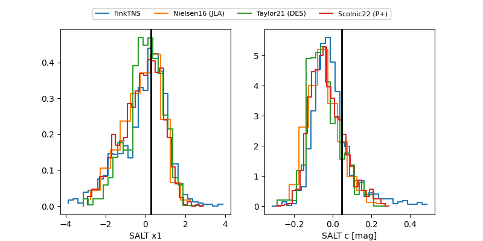

FINK: ZTF25abpzwne
Lasair: ZTF25abpzwne
ALeRCE: ZTF25abpzwne
TNS: 2025xhp
YSE: 2025xhp
ZTF25abpzwne (ztf,fink)
2025xhp (tns,yse)
PS25hoq (panstarrs)
equatorial (ra, dec) = (357.9457,-1.36881)
galactic (l, b) = (91.3939,-60.53487)

last atlasc=18.46, atlaso=18.14, ztfg=18.10, ztfr=18.48
1 atlasc, 7 atlaso, 15 ztfg, 12 ztfr detections